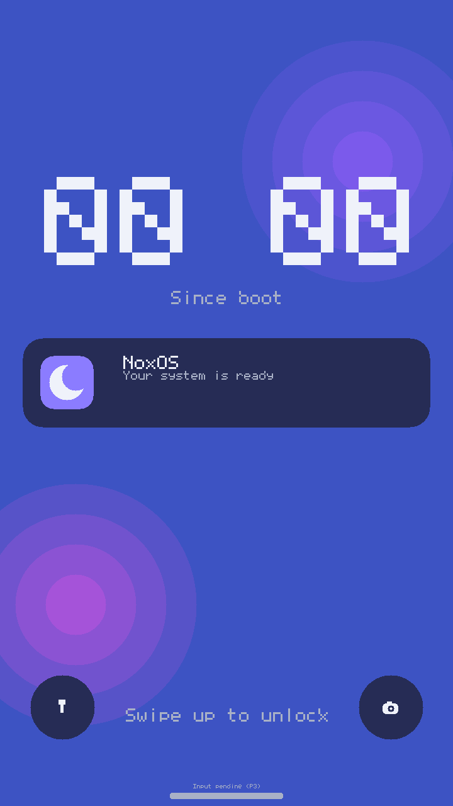
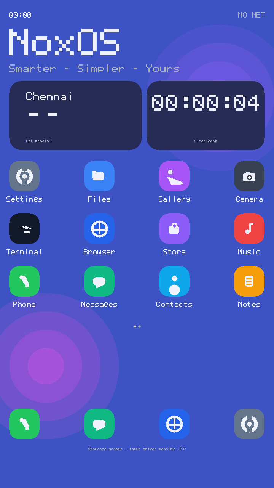
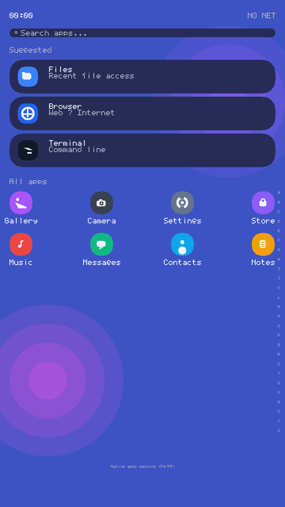
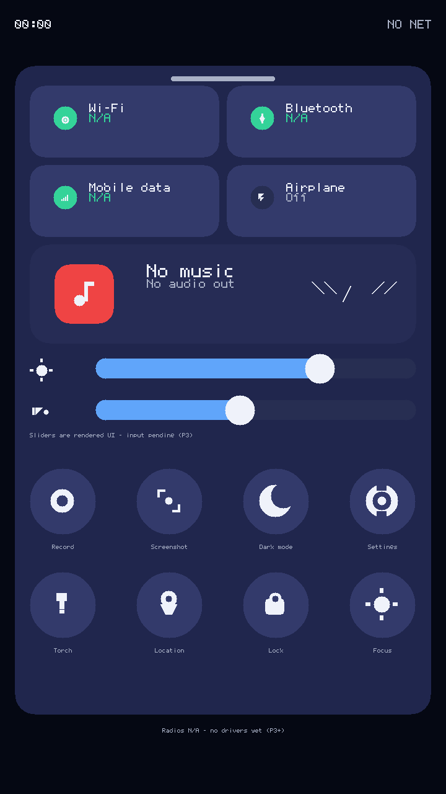
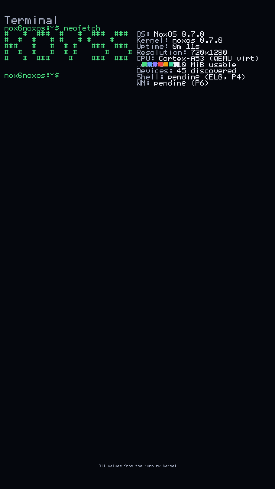
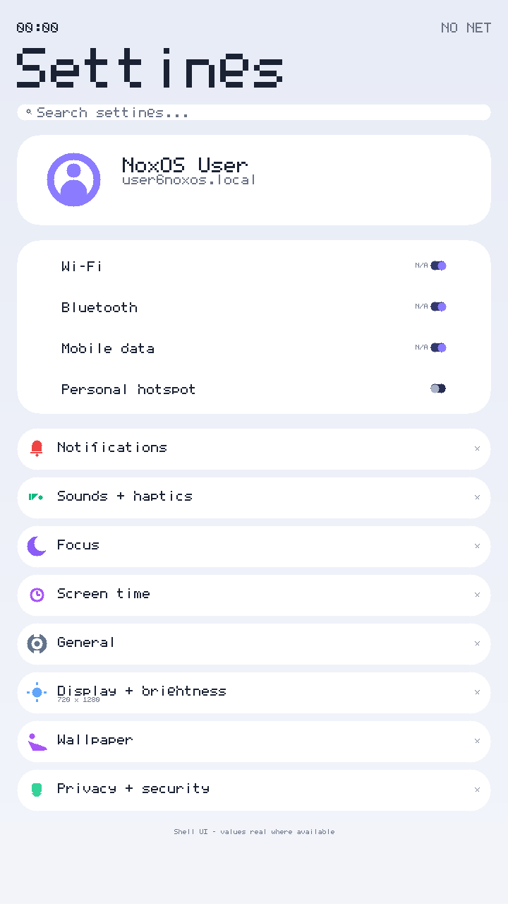
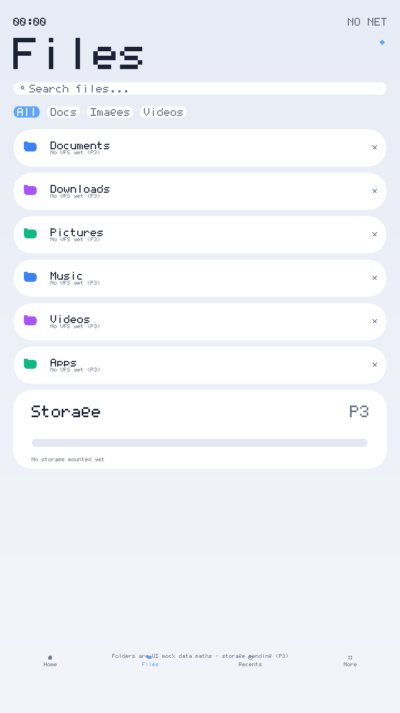
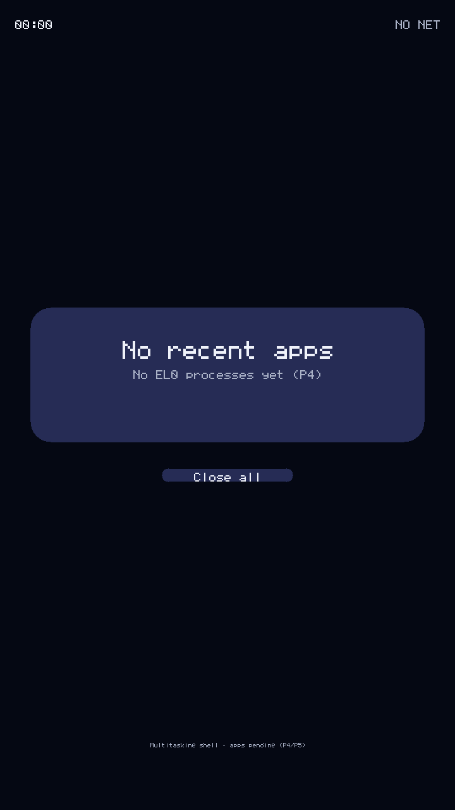

NoxOS Documentation
Smarter - Simpler - Yours
An independent, no_std Rust kernel for AArch64 mobile hardware, built and verified end to end inside a QEMU sandbox.
Documents
Overview
What NoxOS is, its goals and the feature map of the current build.
Architecture
Kernel subsystems, boot flow, memory layout and driver model.
Boot
Boot stages, the init checklist and the smoke markers the tests watch.
Build
Toolchain setup, build targets and running the kernel in QEMU.
Design System
The UI language: aurora theme, pixel typography, scenes and animation.
Status
Current milestone status and which gates are verified.
Milestones
Release history from v0.1 to the v0.7 UI showcase.
Roadmap
Planned work: input driver, app framework and beyond.
Security
Threat model, audit findings and the hardening checklist.
Known Limits
Honest limitations of the current build - no hidden gaps.
Hardware Deps
What NoxOS expects from the machine it boots on.
Analysis
Design analysis and trade-offs behind the kernel decisions.
Privacy
Data handling stance: what leaves the device and what never does.
UI Tour - Real QEMU Screenshots








